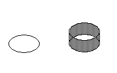

|
Thickness Property |
Specifies the distance a 2D AutoCAD object is extruded above or below its elevation.
Signature
object.Thickness
object
Arc, Attribute, AttributeReference, Circle, LightweightPolyline, Line, Point, Polyline, Shape, Solid, Text, Trace
The object this property applies to.
Thickness
Double; read-write
The default is 0.0.
Remarks
Changing the thickness of an object changes its Z direction thickness.

Changing the thickness of a 3D polyline, dimension, or floating viewport has no effect.
| Comments? |